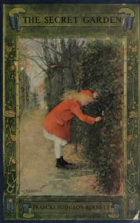

TSYetim qizning sirli bog'ni kashf etishi va hayotga qaytishi haqidagi ta'sirli hikoya.
Ushbu klassik asar yetim qolgan Meri Lennoksning Angliyadagi amakisining qasriga ko'chib o'tishi va u yerdagi sirli bog'ni kashf etishi haqida hikoya qiladi. Bog'dagi sirlar va yangi do'stlar qahramonning hayotga bo'lgan qarashlarini tubdan o'zgartiradi.